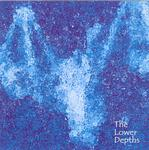

Home Artist links Label link

Lands End - The Lower Depths
| Artist: | Lands End |
| Title: | The Lower Depths |
| Label: | Cyclops CYCL 142D |
| Length(s): | 64 minutes |
| Year(s) of release: | 2005 |
| Month of review: | [05/2006] |
Line up
Fred Hunter - keyboards, bass, guitars, percussion
Mark Lavallee - drums, percussion
Jeff McFarland - vocals, guitars
Francesco Neto - guitars
with
Bruce Soord -
Steve Anderson
Cathy Alexander - vocals
Tracks
| 1) | An Accident... | 1.21
|
| 2) | Digital Signatures | 14.22
|
| 3) | Behind The Iron Gates | 7.46
|
| 4) | Why Should I? | 5.11
|
| 5) | Hope Springs Eternal | 8.31
|
| 6) | A New World Order | 24.29
|
| 7) | Believe In What | 3.27
|
Summary
The bio states that Lands End is now less a band than a project, since it
has been years since all members were together in a room.
Although this in in fact a double album, only single promo copies
were spread among reviewers. The band is helped out by people from the
Cyclops stable, like Pineapple Thief's Bruce Soord. Finally, I always
like to be mentioned in the thank you's, but it would be nice that my
name is spelt correctly (it is Jurriaan Hage).
The music
An accident is the short opener leading up to the melancholic guitar
of Digital Signatures, the first of the epic tracks. When the drums
set in, the music obtains a very sequenced feel. The keyboards
on the other hand are typically Lands End, not just the light ones, but
especially the more present meandering ones. It is very strange to hear
female vocals in the music of Lands End, because I identify the voice
of McFarland strongly with the music of this band. Alexander has a voice
in the line of Annie Haslam, just a bit lower. I think she is too static
for the music, she does not have the emotional impact of McFarland and that
is what this music needs. It gets better in the final which has a majestic
guitar solo building up to a climax, accompanied by various synths. It turns out
Lands End can still move me.
Behind The Iron Gates is a ballad like tune, this time McFarland at the helm.
He sings in his typical, tragic way, as if life has no point. The music is
realtively sparse with acoustic guitar and a bit of synths. Halfway, we break into
a more hopeful atmosphere. Slowly, the music powers up, supported by
some nice themes. The keyboards tend to be quite cosmic in the back, and of course
there is plenty of mellotron.
Why Should I? also opens with acoustic guitar. The vocals sound ehm well a bit like
Oasis or Smashing Pumpkins in their softer songs. I guess this is Bruce Soord
singing. This is a bit too straightforward, and the melodies aren't that strong.
Very untypical for Lands End. Towards the end Soord starts to sound more
as he does on Pineapple Thief.
Hope Springs Eternal opens with flute and quite electronics and piano.
Very much in the back, McFarland sings (and he stays there, as if he is singing
in some enclosed echoey space), while the light piano sits
in the front. The synths part that follow have that typical meandering, but
captivating manner of Lands End, powering up slightly throughout and
with much repetition in slightly different way. This time they go all the way, especially the drummer.
A New World Order is the major epic on this disc, almost 25 minutes in length.
As on the previous epic, it is Cathy Alexander doing the singing, which does not
bode well for me. With its length, and the style of this band, it is not surprising that the music develops very slowly. True enough around the nine minute mark
the music fires up nicely with swirling synths and heavy percussion.
Then the vocals come back in. She has more distinctive vocal melodies to work
with in the second half, accompanied by percussive piano in one air, and melodic
piano in the other. Her voice is even a bit higher and more Haslam like here.
Believe In What is the relatively short closer, with acoustic guitar, soft synths
and McFarland on vocals. A sad farewell.
Conclusion
The excellent predecessor of this album, Natural Selection, dates from 1997,
although in between we had Drainage on the Cyclops Club label and the Transience
albums. The expectations for this album however were not realised in my opinion.
Maybe I stick too much to what I expect from this band, but the new elements
do not appeal to me much. The power of the band comes from the combination
of McFarland's melancholic voice and the ebb and flow of the meandering music.
There is too little of that for my tastes. Cathy Alexander has a fine voice,
but she does not have the emotional impact, and then it only works when
she has good vocal melodies to work with. These are not present on Digital Signatures
although it is better on for instance the second half of A New World Order.
I prefer the band 'sec' as they are on Hope Springs Eternal, and the album as whole
sounds to me disjointed and fragmentary.
© Jurriaan Hage